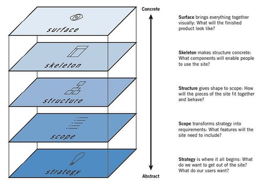

公司的设计流程，主要遵照Five element of UX designer（用户体验设计五要素）的原则，先从产品战略产品价值，再到产品结构，最后一步步清晰地落实到产品的视觉设计上去。

每个阶段都会有不同的输出物。第一、二阶段主要由产品经理负责，（曾经跨领域地写过关于这两个阶段的输出物：产品PRD。
第三四五阶段主要由产品设计师，也就是我来负责。我习惯把第三四个环节一起进行，统称为交互设计阶段，然后再进行第五个环节，也就是视觉设计阶段。因为我之前做的并不是特别好，所以接下来主要谈的是我个人对之前环节的反思以及未来的打算。
小公司也需要详细的交互文档
文档是一个最直接高效地记录产品发展过程的工具。即使在Lean UX的流程里，很多时候撰写详细的产品文档会显得浪费时间并且多余。但为了让团队里的所有成员，乃至未来新加入的成员都能理解产品设计的整体思路，完善而清晰的设计文档必不可少。
原则上一个产品设计的过程中的主要生成物包括了调研报告，故事版，人物画像，用户流程图，界面规划与交互图，视觉稿等。之前我都是把这些部分拆散开来，每个部分都是独立的存在于共享云盘里，所以其他组员没有办法很好地找到他们。并且因为命名地不规范，大家也没有办法把不同的文件一一对应。
目前我想到的最好的一个解决办法是：提供完整的交互文档框架。这在大公司也许已经很普遍了，但是经历了上一次的流程问题后，我才明白到完整的交互文档的重要性。
一个完整的交互文档包含了：
1. 标题与版本号
2. 更改日志（Change Log）
3. 产品介绍与设计背景，主要是PRD里的节选部分
4. 产品架构和用户流程图
5. 界面流程（界面之间）规划，内容布局和交互操作与反馈（界面内）
6. 视觉稿以及Style Guide （可选）
设计师可以随着设计过程得不断向前推移，往里面添入新的内容。如果新方案需要对原有方案进行微调，也可以直接在更改日志中标注清楚，然后直接在具体的章节里进行修改。如果需要对产品的概念或者用户流程进行大幅度的修改，则可以开启新的交互文档版本。交互文档的命名可以是：产品名_平台_版本_最新修改日期.pdf，例如：Stickleback_desktop_v1_20160424.pdf
制作交互文档的好处在于：第一，人人都可以很直接的了解到整个项目的过程，掌握最新的设计变化，只用一个文档就可以通行全公司。第二，在设计输出的过程中，设计文档是设计师的语言。制作一个赏心悦目细节精准的设计文档，对于自己是一个好的锻炼，也能让其他人看到以及理解设计的价值。
过程中的设计沟通
不同公司的设计文化会有很大差异。在我们公司整个设计过程中的设计沟通，我认为可以分为四部分: 非正式场合下的闲聊，小型设计反馈，线上沟通（我们用的是slack）以及大型的设计评估。
非正式场合的闲聊，主要发生在厨房里或者球桌上，大家聊聊自己平时做了什么，互相update一下信息。这个主要起到一个headsup的作用，也很有利于增进同事感情，使得一部分人设计决定更加容易得到buy in。为什么说设计师其实有的时候就是销售人员呢。。。
小型设计反馈是最常见的活动。一个产品往往会涉及其他不同部门的人，我在做设计的时候，一般做到一半或者做完初版就会与几个利益相关人schedule一个小型会议，来收集设计反馈。这样做非常高效，但也容易造成信息不对称——有的时候产品吸取了ABC的意见，然后EFG虽然对此也有想法，却毫不知情。结合之前提到的交互文档以及线上沟通工具，我觉得比较好的做法是在每进行小型设计反馈活动，并且更新的文档之后，就将Change Log强调一下放在Slack的项目群里，并且附上最新版的文档。这样对于更改部分有意见的人就可以通过查看文档了解到我的设计思路，然后再和我进行沟通。
大型设计评估一般发生在设计上有了一些方向性转变的时候，参与者不仅包括了全体的组员（dev, PM, designer, reseacher)，有时候也会有公司高层参与，提供一些产品商业策略上的支持。但是基于上次流程中，很多人抱怨他们对于产品设计的方向没有完全up to date，我决定在开发下一款产品的时候，适当增加会议的频率。有时候总是抱着“经常召集开会，会不会浪费大家时间”的顾虑，现在想想，如果是出于将产品做好的态度，增加全组成员坐下来一起沟通的时间绝对是磨刀石。
视觉稿件的交付
视觉稿件和style guide一般是产品设计的阶段性最后一步（当然之后还有迭代啊修改之类的）。除了上述的一些交互文档的规范之外，视觉稿件交付时还要考虑的一个问题在于：和程序员工作节奏的协调。
在创业公司，往往等交互文档生成之后，程序员就开始开发环节了。所以生成视觉稿件和产品开发往往是一个同时进行的过程。我们上个产品遇到一个最大的问题就在于，当我还在更新视觉文件的时候，程序员们已经在implement一些视觉的细节了。所以有一些他们已经开发了的视觉细节，一旦我后面修改了一下，就需要重新写代码。项目时间越是紧张，这种状况出现的可能性就越大。
所以在这里的建议的是，作为设计师可以先针对产品基本的组件：一些具有较高可复用性且具备完善设计、使用说明的部分，以及产品使用的字体，基本的间距规则，给出style guide。另外，可以在给出设计稿的时候，将仍然需要修改的，不确定的部分标注上黄色的小圆圈，所以程序员就明白可以把这部分的设计细节先放一放了。
最后一点，遵守design freeze time（设计冰冻时间）很重要。整个产品组要对进度有一个共识。因为设计的迭代是没有止境的，尤其是小公司，从设计到开发没有一个明确的界限，就更需要对程序员的能力有所尊重。超过一个特定日子之后，设计师和PM就应该将修改的内容放入到下一个周期里去，而不是继续修改视觉稿件，给程序员带去更多开发的压力。